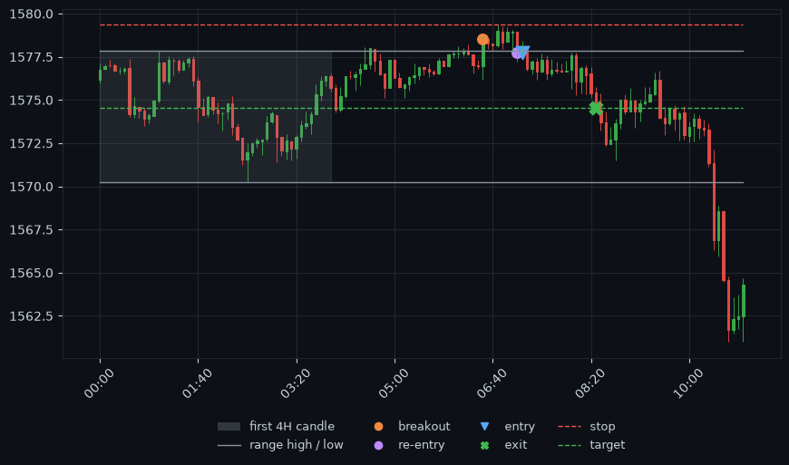

first-4h-candle-reentry
A YouTube scalping strategy, written as exact rules and tested across three markets.
- markets
- EURUSD, gold, Bitcoin
- data
- 5+ years, 5-minute
- trades
- about 3,100 per market
- per trade
- -0.025R to +0.010R
- drawdown
- 80R to 118R
- costs
- not included
Not tradeable as it is, but worth a closer look.
View the repo